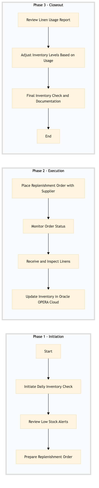

| Role | Steps |
|---|---|
| Executive Housekeeper | 1.1 1.2 1.3 2.1 2.2 3.1 3.2 3.3 |
| Housekeeping Staff | 2.3 2.4 |
| Step | Name | Role | System | Input | Output | KPI | Dec? | Exc? | Pain Point / Risk |
|---|---|---|---|---|---|---|---|---|---|
| 1.1 | Initiate Daily Inventory Check | Executive Housekeeper | Oracle OPERA Cloud | Inventory report from Oracle OPERA Cloud | Daily inventory check list | Less than 5 minutes | N | Y | Inaccurate inventory data due to manual input errors |
| 1.2 | Review Low Stock Alerts | Executive Housekeeper | Oracle OPERA Cloud | Low stock alerts from Oracle OPERA Cloud | List of items requiring replenishment | Less than 3 minutes | N | Y | Delays in receiving low stock notifications |
| 1.3 | Prepare Replenishment Order | Executive Housekeeper | Oracle OPERA Cloud | List of items requiring replenishment | Replenishment order form | Less than 10 minutes | N | Y | Incorrect item quantities in orders |
| 2.1 | Place Replenishment Order with Supplier | Executive Housekeeper | Birchstreet Procurement | Replenishment order form | Confirmation of order placement | Less than 15 minutes | N | Y | Supplier delays in order processing |
| 2.2 | Monitor Order Status | Executive Housekeeper | Birchstreet Procurement | Replenishment order form | Order status update | Daily check | N | Y | Lost or delayed orders |
| 2.3 | Receive and Inspect Linens | Housekeeping Staff | Oracle OPERA Cloud | Delivered linens | Inspection report | Less than 1 hour | Y | N | Damaged or incorrect items received |
| 2.4 | Update Inventory in Oracle OPERA Cloud | Housekeeping Staff | Oracle OPERA Cloud | Inspection report | Updated inventory record | Less than 10 minutes | N | Y | Manual data entry errors |
| 3.1 | Review Linen Usage Report | Executive Housekeeper | Oracle OPERA Cloud | Linen usage report | Usage analysis report | Less than 20 minutes | N | Y | Inaccurate reporting due to system issues |
| 3.2 | Adjust Inventory Levels Based on Usage | Executive Housekeeper | Oracle OPERA Cloud | Usage analysis report | Adjusted inventory levels | Less than 15 minutes | N | Y | Over or underestimation of linen usage |
| 3.3 | Final Inventory Check and Documentation | Executive Housekeeper | Oracle OPERA Cloud | Adjusted inventory levels | Final inventory check report | Less than 10 minutes | N | Y | Omissions in final documentation |
This process manages the inventory of linens in a full-service Marriott hotel using Oracle OPERA Cloud PMS and other relevant systems. It ensures that linens are adequately stocked, tracked, and managed to maintain guest satisfaction and operational efficiency.